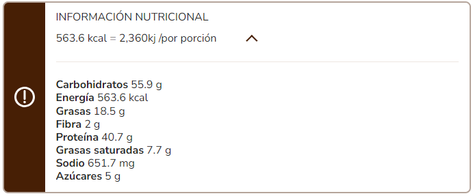

Mixed Lasagna Recipe

Description
Prepare with this mixed lasagna a nutrirional meal that everyone loves and give it a different touch
Ingredients
- 1 tablespoon oil (14 ml)
- 1 pound lean ground beef (500 g)
- 1 sachet of MAGGI® BOLOGNESE SAUCE BASE
- 1 1/2 cups of water
- 1 skinless chicken breast, cooked and shredded (453 g)
- 1 sachet of MAGGI® BECHAMEL SAUCE BASE
- 1 cup cold water (240 ml)
- 1 cup of milk (240 ml)
- 1 box of lasagna pasta (500 g)
- 8 slices of mozzarella cheese (128 g)
- 8 tablespoons of parmesan cheese (40 g)
Steps
STEP 1 Prepare the meat
- In a medium frying pan, heat the oil over medium heat for 30 seconds, add the meat and cook for 5 minutes. Separately, dissolve the contents of the MAGGI® BOLOGNESE SAUCE BASE sachet in the suggested water and add to the meat, cook for 5 more minutes or until it is well cooked and the sauce thickens.
STEP 2 Prepare the chicken
- In a small pot add the water, milk and dissolve the contents of MAGGI® BECHAMEL SAUCE BASE, cook over medium heat for 5 minutes or until the sauce boils and thickens; Finally, add the shredded chicken and let it heat for 1 minute.
STEP 3 Preheat the oven to 180°C/360°F.
- Preheat the oven 10 minutes before preparation.
STEP 4 Assemble the lasagna
- In a medium refractory dish, put a bed of lasagna pasta, distribute the Bolognese meat sauce on top, put another bed of pasta, on top of the chicken sauce, finish with the cheese slices and finally sprinkle the Parmesan cheese.
STEP 5 Bake
- Take the baking dish to the oven and bake for 10 minutes or until gratin.
